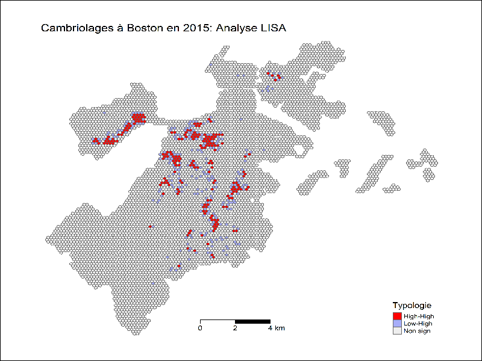
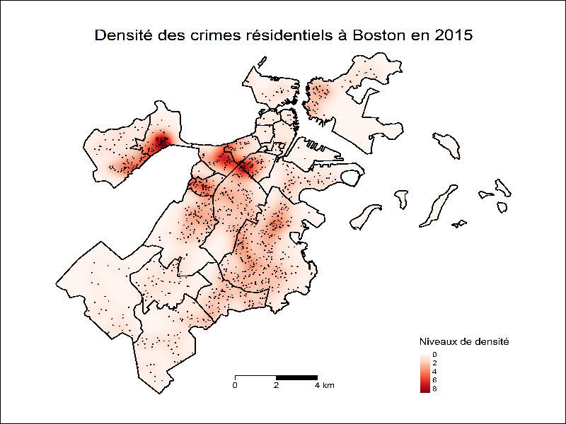

The topic of this project is based on the fact that crime is an issue that is becoming increasingly important today. In my home country, I have observed that this situation is worsening, and I also have the impression that a similar trend is occurring in Montréal. At first, I wanted to work with data from Montréal, but I could not find sufficiently complete open datasets to carry out this type of analysis. I therefore chose to work on the city of Boston, where I have previously lived. My familiarity with the city helps me better understand the context and the results. In this project, I focus on residential burglaries between 2015 and 2022 using spatial and temporal analysis methods. The idea is to determine whether some areas are more affected than others, how the situation evolves over time, and to demonstrate how geomatics tools can help analyze this type of problem.
Identifier les schémas criminels dans la ville de Boston, prévoir les taux de criminalité, puis prédire si un crime se produira ou non. The objective of this project is to use geospatial data and the R programming language to analyze residential crime in the city of Boston between 2015 and 2022. Through spatial analysis techniques and cartographic visualization, the goal is to identify patterns, concentrations, and temporal trends in burglary incidents.
• Language R
R libraries: sf, spatstat, tmap, ggplot2, dplyr, leaflet
• Environment: RStudio
• Open data (geospatial + attribute)
- Urban boundaries (Harvard University)
- Road network (Boston Open Data)
- Crime data 2015–2022 (Analyze Boston)
• Data processing
Data import, cleaning, preprocessing, CSV → geospatial conversion
• Spatial analysis
KDE, NKDE, hotspot analysis, LISA spatial autocorrelation
• Visualization
Mapping, clustering, temporal analysis, animation (2015–2022)


This type of analysis is not limited to crime studies. The techniques used (KDE, LISA, hotspot analysis) are transferable to other fields, such as:
• Public transportation: route analysis and network optimization (e.g., Waze)
• Retail / geomarketing: identifying the most profitable store locations
• Risk management: monitoring pollution and identifying critical zones